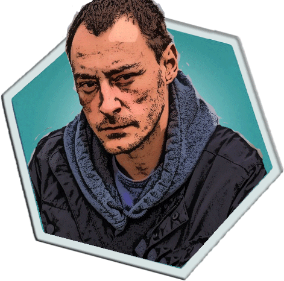

Finally you remember.
It was on June 18th, 1914. You were in Sarajevo.
Sarajevo, which had been under Ottomon Rule for
425 years, had recently been annexed by the Hasburg
Dynasty, the rulers of the Austo-Hungarian Empire.
1 Hour Later
You are having breakfast in a Sarajevo Cafe when you first
see them. And you sense immediately that this isn't just a
casual meeting between six friends.
The tension in their bodies, the look in their eyes,
is like looking into a mirror at a past version of you
and your friends before a major battle .
These guys are upto something. Something big.
As you watch them, they get up. Your vantage point allows
you to get a closer look at three of them.
....................................
The first one is wearing expensive clothes.
He has a dignity about him that suggests an aristocratic background.
Looks to be the youngest of the lot.


Has a book in his hand and seems well-read.
But his ragged clothes and angry expression
suggest he has seen some tough times in life.
He is the smallest, and looks as if he is ill.
But what he lacks in height and strength,
he seems to make up in spirit.
They leave the cafe and huddle together briefly outside.
Then, they all walk off seperately.
Who should you follow? (Select one man by clicking on the image)
The man walks for a short distance before he reaches the riverfront.
There, he sits down on a bench.
From where he is sitting, there's a clean line of sight,
4-5 miles on each side.
A crowd is slowly forming.
30 minutes later.
The man seems to be waiting for something. In the
meantime, the crowd gets larger.
Soon, you sense a slight buzz. You look to your left, and
see 6 cars travelling slowly, towards the end of the road, a
few kilometres away.
Just then, you also catch sight of two posters on the
opposite wall, stuck right next to each other.
Archduke Franz Ferdinand is visiting Sarajevo! You
remember meeting him as a child. The Hasburgs have been
great friends of your family for centuries. In fact, your
family owes them a large debt, for Franciss II, the grand-
uncle of Archdule Franz Ferdinand and the last Holy
Roman Emperor once saved your grandfather’s life.